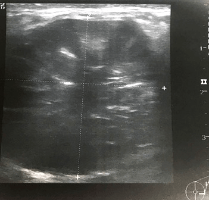

স্তন

স্তনের স্বাস্থ্য় সংক্রান্ত অ-বিপজ্জনক সমস্য়াগুলি
স্তনবৃন্ত সংক্রান্ত সমস্য়াগুলি
পায়েল (নাম পরিবর্তিত) একজন 45 বছর বয়সী মহিলা, যার 6 মাস ধরে স্তনবৃন্ত থেকে বারবার নি:সরণ ও স্তনবৃন্তের চারপাশে সংক্রমণ হচ্ছে। .
স্তন
স্তনবৃন্ত

ডাক্ট এক্ট্য়াসিয়া কি?
স্তনগুলি লোবিউলগুলি (দুধ-প্রস্তুতকারী গ্রন্থি) এবং ডাক্ট বা নালী (যে টিউবগুলি স্তনবৃন্তে দুধ পরিবহন করে) দিতে তৈরী হয়, যা চর্বিযুক্ত পেশীকলা ও সাপোর্টকারী পেশীকাগুলি দিয়ে ঘেরা থাকে। মহিলারা মেনোপজ বা রজ:নিবৃত্তিতে পৌ৺ছালে এবং স্তনের বয়স হয়ে গেলে, স্তনবৃন্তের পিছনে থাকা নালীগুলি আকারে ছোট ও প্রশস্ততর হয়ে যায়। এটি হল এক্টাসিয়া।
এটি স্তনের একটি স্বাভাবিক পরিবর্তন এবং এটি নিয়ে চিন্তার কোন কারণ নেই। কখনও কখনও প্রশস্ত হয়ে যাওয়া নালীগুলিতে একটি নি:সরণ জমা হতে পারে এবং সেগুলির প্রান্তরেখাতে অস্বস্তি তৈরী করতে পারে। এছাড়াও প্রান্তরেখাগুলিতে ঘা ও ব্য়থাও হতে পারে, যদিও তা খুব একটা দেখা যায় না। .
কিভাবে ডাক্ট এক্ট্য়াসিয়া নির্ণয়কৃত হয়?
যদি স্তনবৃন্ত থেকে নি:সরণ হয়, রোগনির্ণয় নিশ্চিত করার জন্য় সেটিকেও পরীক্ষা করা উচিত, বিশেষ করে তাতে যদি রক্তের চিন্হ থাকে। এগুলি হল স্তনের একটি ক্লিনিক্য়াল পরীক্ষা, একটি ম্য়ামোগ্রাম (স্তনের এক্স-রে) ও আল্ট্রাসাউন্ড স্ক্য়ান (যা উচ্চ ফ্রিকোয়েন্সীর শব্দতরন্গ ব্য়বহার করে স্তনের প্রতিচিত্র তৈরী করে)।.
যদি স্তনবৃন্ত থেকে নি:সরণ হয়, রোগনির্ণয় করার জন্য় নিশ্চিত করার জন্য় সেটিকেও পরীক্ষা করা উচিট, বিশেষ করে তাতে যদি রক্তের চিন্হ থাকে।
কিভাবে ডাক্ট এক্ট্য়াসিয়া ব্য়বস্থাপনা করা হয়?
বেশীর ভাগ ক্ষেত্রে, যদি এটি বয়স হওয়ার একটি স্বাভাবিক অংশ হয়, সেক্ষেত্রে কোন চিকিত্সার প্রয়োজন হয় না এবং তা নিজেই ঠিক হয়ে যেতে পারে। যদিওঅ নতুন কোন উপসর্গ থাকলে স্পেশালিস্টকে দেখানো গুরুত্বপূর্ণ। তবে, স্তনবৃন্ত থেকে সমস্য়াজনক নি:সরণ চলতে থাকলে, তাকে প্রভাবিত নালী বা নালীগুলিকে অপসারিত করার জন্য় একটি অপারেশন করতে হতে পারে। অপারেশনটি সাধারণত: একটি জেনারেল অ্যানেস্থেটিকের আওতায় করা হয় এবং রোগীকে সারা দিন বা রাতে হাসপাতালে থাকতে হতে পারে।
পেরিডাক্টাল ম্য়াস্টাইটিস কি?
পেরিডাক্টাল ম্য়াস্টাইটিস হল স্তনের একটি অ-বিপজ্জনক (ক্য়ান্সার নয়) সমস্য়া। কখনও কখনও স্তনবৃন্তের নীচে থাকা নালীগুলি ফুলে যায় ও সংক্রামিত হয়। এটিকে পেরিডাক্টাল ম্য়াস্টাইটিস বলে। যে কোন বয়সের মহিলাদের এটি হতে পারে, তবে কমবয়সী মহিলাদের ক্ষেত্রে এটি বেশী দেখা যায়। যদিও মহিলাদের ক্ষেত্রেই এটি সবচেয়ে বেশী দেখা যায়, কিন্তু পুরুষদেরও পেরিডাক্টাল ম্য়াস্টাইটিস হতে পারে, তবে তা খুব বিরল।.
পেরিডাক্টাল ম্য়াস্টাইটিসের জন্য়, স্তন স্পর্শ করলে নরম ও উষ্ন অনুভূত হতে পারে এবং ত্বক লাল হয়ে যেতে পারে। এছাড়াও এর জন্য় স্তনবৃন্ত থেকে একটা নি:সরণ হতে পারে, যা রক্তসহ বা রক্তহীন হতে পারে। .
কখনও কখনও স্তনবৃন্তের পিছনে একটি মাংসপিন্ড অনুভূত হতে পারে বা স্তনবৃন্তের পিছনের স্তনের পেশীকলায় ক্ষত হতে পারে। এটি স্তনবৃন্তকে ভিতরের দিকে টেনে নিতে পারে, সেজন্য় এটি উল্টে যেতে পারে, সেজন্য় এটি উল্টে যেতে পারে। কখনও কখনও একটি ফো৺ড়া (পু৺জ জমা হওয়া) বা একটি ফিসচুলা (একটি নালী ও ত্বকের মধ্য়ে একটি পথ তৈরী হওয়া) তৈরী হতে পারে। যারা ধূমপান করেন তাদের পেরিডাক্টাল ম্য়াস্টাইটাস হওয়ার বেশী ঝু৺কি থাকে,কারণ সিগারেটের মধ্য়ে ধাকা ক্ষতিকর পদার্থ স্তনবৃন্ত পিছনের নালীগুলিকে ক্ষতিগ্রস্ত করতে পারে। ধূমপান এছাড়াও চিকিত্সার পর সেরে ওঠার পক্রিয়াকে ধীর করে দিতে পারে। .

একটি পেরিডাক্টাল ম্য়াস্টাইটাস কিভাবে নির্ণীত হয়?
স্তনের একটি ক্লিনিক্য়াল পরীক্ষা ও আল্ট্রাসাউন্ড করা অবশ্য়প্রয়োজনীয়। যেহেতু স্তন খুব নরম হয়ে ওঠে, সেজন্য় একটি ম্য়ামোগ্রাম করানো অস্বস্তিজনক হতে পারে এবং সংক্রমণ সেরে যাওয়া পর্যন্ত তা করা হয় না। যদি স্তনবৃন্ত থেকে কোন নি:সরণ হয়, সেক্ষেত্রে একটি নমুনা ল্য়াবোরেটরিতে পাঠাতে হবে, যেখানে একটি মাইক্রোস্কোপের তলায় ফেলে তার রোগনির্ণয় নিশ্চিত করা হবে (যদি নি:সৃত পদার্থে রক্তের চিন্হ থাকে সেক্ষেত্রে তার সম্ভাবনা বেশী হবে)। .
পেরিডাক্টাল ম্য়াস্টাইটাস –এর কি চিকিত্সা রয়েছে?
বেশীর ভাগ ক্ষেত্রে, সংক্রমণের সমস্য়ায় অ্যান্টিবায়োটিকগুলি কাজ দিয়ে থাকে। ব্য়থা থেকে আরামের জন্য়, প্য়ারাসিটামল প্রেসক্রাইব করা হতে পারে। যদি একটি ফো৺ড়া (পু৺জ জমা হয়) হয়, সেক্ষেত্রে চিকিত্সার প্রথম পছন্দ হল আল্ট্রাসাউন্ডের নির্দেশনার মাধ্য়মে পু৺জ অপসারণ করা (অ্যাসপিরেশন)। সমস্ত পু৺জ অপসারিত হওয়া পর্যন্ত এটিকে পুনরাবৃত্ত করার প্রয়োজন (একটি সময়কাল জুড়ে)। যদি পুনরাবৃত্ত অ্যাস্পিরেশন বা অপসারণে সহায়তা না হয়, সেক্ষেত্রে একটি স্বল্পকালীন জেনারেল অ্যানেস্থেটিকের আওতায় ত্বকে একটি ফুটো করে পু৺জ বের করে দেওয়া হয়। .
যদি পেরিডাক্টাল ম্য়াস্টাইটিস ফিরে আসে (আবার হয়), সেক্ষেত্রে তাকে একটি অপারেশন করে প্রভাবিত নালী বা নালীগুলিকে অপসারণ করতে হবে। পেরিডাক্টাল ম্য়াস্টাইটিস বারংবার ফিরে আসার ক্ষেত্রে প্রভাবিত নালী বা নালীগুলি (একটি মাইক্রোডকেকটোমি নামে পরিচিত) বা সমস্ত প্রধান নলীগুলি অপসারণের (একটি সম্পূর্ণ নালী অপসারণ নামে পরিচিত) প্রয়োজন হতে পারে। অপারেশনটি একটি জেনারেল অ্যানেস্থেটিকের আওতায় করা হয়।.
